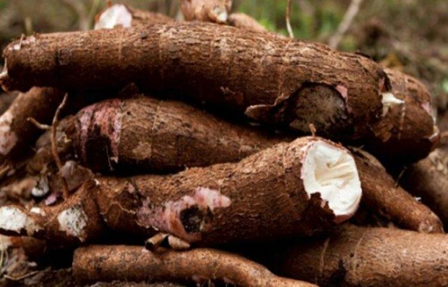
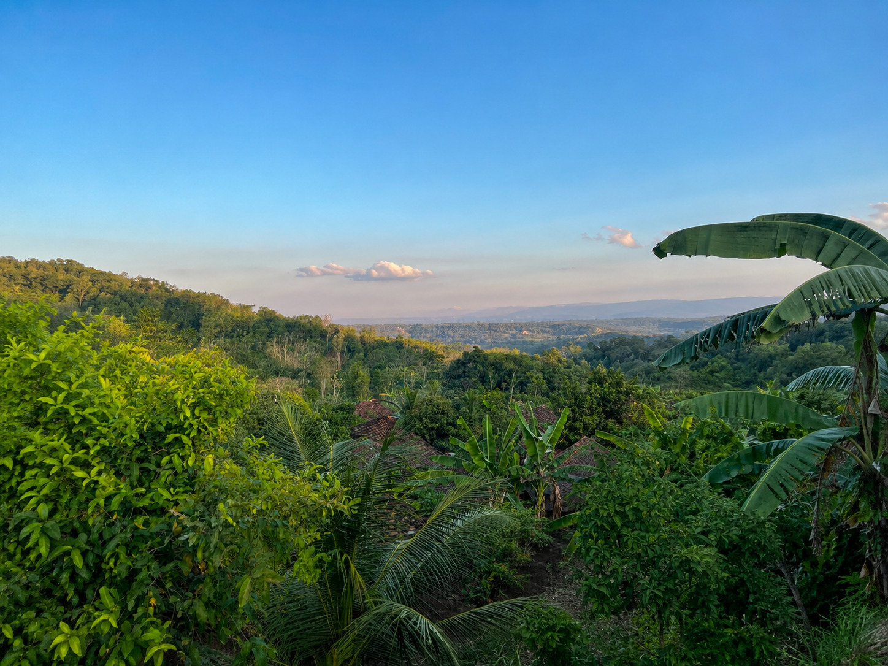
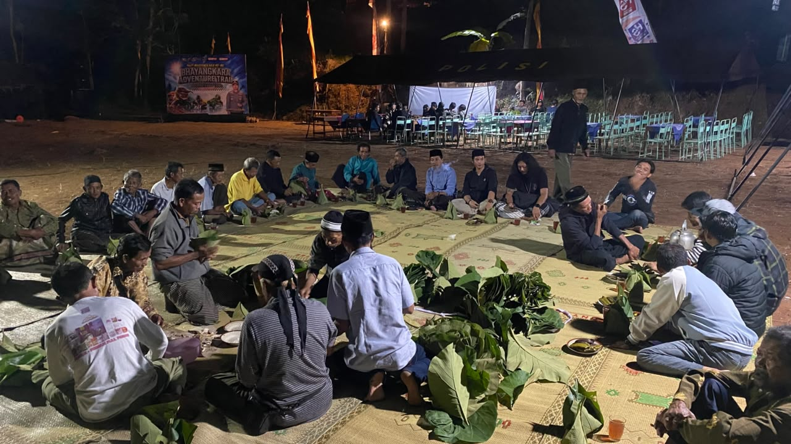

Berbagai potensi yang dimiliki Padukuhan Geger sebagai modal pembangunan dan peningkatan kesejahteraan masyarakat.

Sektor pertanian merupakan mata pencaharian utama masyarakat Padukuhan Geger. Berdasarkan data kependudukan, sebagian besar warga bekerja sebagai petani dengan jumlah sekitar 354 orang. Didukung lahan pertanian yang luas serta kondisi geografis dataran tinggi, sektor ini menjadi tulang punggung perekonomian masyarakat.

Selain pertanian, masyarakat Padukuhan Geger juga mengembangkan usaha peternakan sebagai sumber pendapatan tambahan. Jenis ternak yang dipelihara antara lain sapi, kambing, dan unggas yang dikelola secara mandiri oleh masyarakat sebagai bagian dari kegiatan ekonomi pedesaan.

Padukuhan Geger memiliki lingkungan pedesaan yang berada pada kawasan dataran tinggi dengan ketinggian sekitar 295 meter di atas permukaan laut. Wilayah ini memiliki curah hujan berkisar 2.000–2.500 mm per tahun sehingga sangat mendukung aktivitas pertanian serta menjaga kelestarian lingkungan alami khas Gunungkidul.

Kehidupan masyarakat Padukuhan Geger sangat menjunjung tinggi nilai gotong royong, musyawarah, dan kebersamaan. Berbagai tradisi budaya seperti Rasulan, Suran, Mauludan, Ruwahan, Besaran, dan Gumbrengan masih dilestarikan sebagai bagian dari warisan budaya yang mempererat hubungan antarwarga sekaligus menjaga identitas lokal.